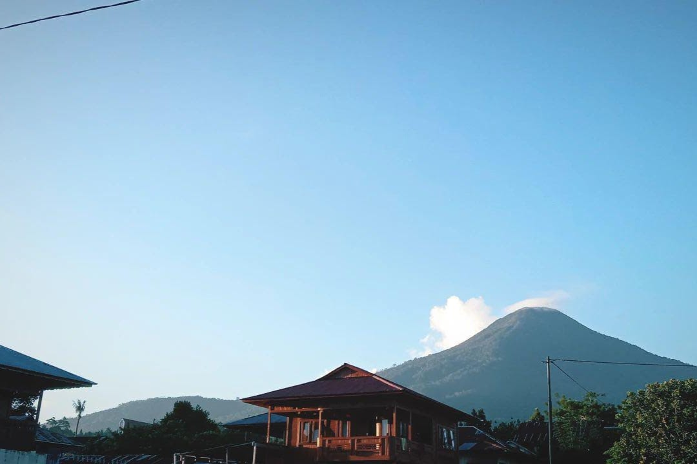
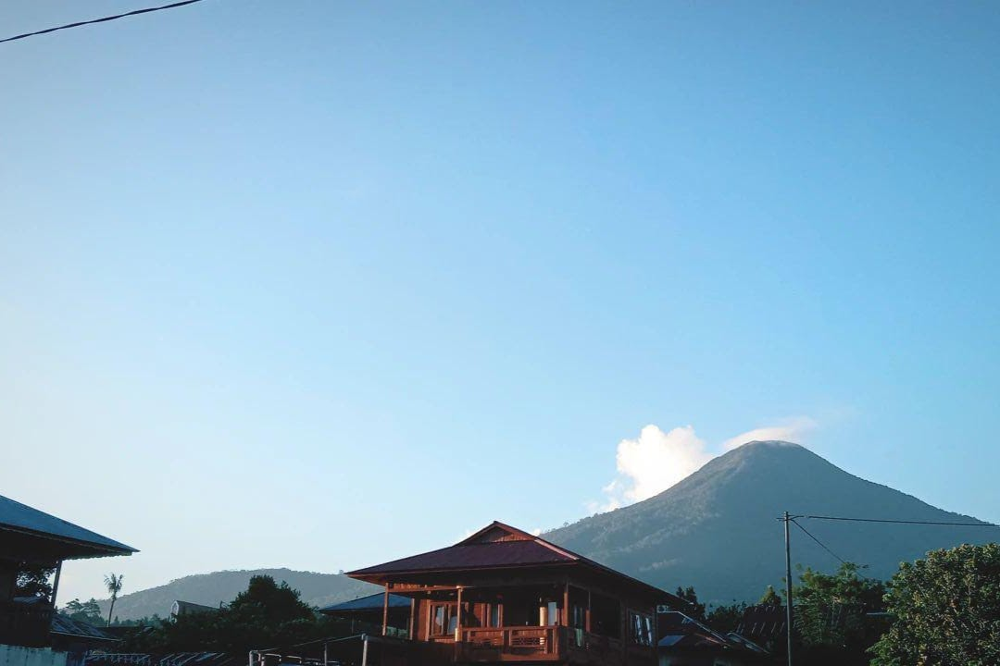

Blog.
Hasil Swiss Open 2024: Gregoria Kalah Dramatis di Final - Novitasari Dewi Salusi
Gregoria Mariska Tunjung harus puas jadi runner-up Swiss Open 2024 usai kalah dari Carolina Marin. Gregoria kalah meski sempat dapat match point lebih dulu.
Dalam pertandingan final Swiss Open 2024 di St. Jakobshalle, Basel, Minggu (24/3/2024) malam WIB, Gregoria melewati duel ketat sepanjang tiga gim melawan Marin. Setelah bertarung selama 1 jam 21 menit, Gregoria kalah 19-21, 21-13, 20-22 dari juara dunia tiga kali itu.
Baca selengkapnya...
Mengapa Revolusi Industri Penting? Dampaknya Pada Masa Lalu, Kini, dan Masa Depan - Ilman Kava Billah
Salah satu peristiwa penting dalam sejarah adalah revolusi industri, yang mengubah cara orang hidup, bekerja, dan berinteraksi satu sama lain. Pertama-tama, revolusi industri memainkan peran penting dalam mendorong kemajuan ekonomi. Ini menghasilkan peningkatan efisiensi produksi dan penyebaran teknologi baru.
Baca selengkapnya...
Kilas Balik Sejarah Seni Digital: Dari John Whitney Hingga NFT - Tri Wahyu Prasetyo
Kemegahan seni digital dewasa ini tidak lepas dari perkembangan teknologi, dan eksplorasi seniman-seniman terdahulu. Seperti kata pepatah, "perjalanan seribu mil dimulai dengan langkah pertama."
Baca selengkapnya...


 
